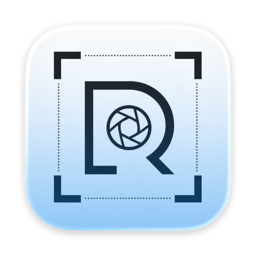

Trigger from anywhere.
Open capture without changing apps or breaking concentration.

RsnapOption + X / native macOS capture
Capture before the moment moves.
A menubar screenshot tool for frozen regions, exact pixels, OCR, and annotations.
01
Rsnap stays out of the dock, starts from the keyboard, and keeps the result ready for copy, save, text recognition, or quick markup.
02
Open capture without changing apps or breaking concentration.
Hold the selected pixels in place while the desktop keeps moving behind you.
Copy pixels, recognize text, save a file, or annotate before export.
03
The macOS host owns the capture surface while the Rust core keeps geometry, protocol, and image semantics precise.
04
The @hackink account shares progress, design notes, and release updates on X. Attention there helps fund continued work while keeping Rsnap free for people who need a sharper capture tool.